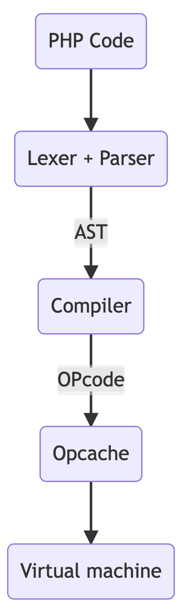

How PHP engine builds AST
First let's look at the PHP codeflow: 
{kind=link}
Prior to version 7, PHP generated OPcodes right inside the parser. PHP 7 introduced a new code abstraction - AST.
Now we can separate parsing and compilation.
In this post I want to talk about the Lexer + Parser part.
PHP uses re2c to create a lexer and Bison to create a parser. If you don't know about these tools, I recommend reading this post.
Let's start with the lexer. The main function of the lexer is to parse the code into tokens.
The PHP 8 tokenizer module provides us with the PhpToken class to parse code into tokens. This is very similar to PHP's internal lexer.
Let's write lexer.php and use it to parse the test.php file.
lexer.php
<?php
$code = file_get_contents($argv[1]);
$tokens = PhpToken::tokenize($code);
foreach ($tokens as $token) {
echo $token->getTokenName() . " ";
}test.php
<?php
$a = 1;
echo $a;lexer.php output:
php lexer.php test.php
T_OPEN_TAG
T_WHITESPACE
T_VARIABLE T_WHITESPACE = T_WHITESPACE T_LNUMBER ;
T_WHITESPACE
T_ECHO T_WHITESPACE T_VARIABLE ;I put the contents of test.php and the output of lexer.php in the same place for a better comparison:
<?php | T_OPEN_TAG
| T_WHITESPACE
$a = 1; | T_VARIABLE T_WHITESPACE = T_WHITESPACE T_LNUMBER ;
| T_WHITESPACE
echo $a; | T_ECHO T_WHITESPACE T_VARIABLE ;How does the PHP lexer parse code into tokens?
re2c helps with this.
re2c is an open-source lexer generator. It uses regular expressions to recognize tokens.
The PHP lexer code is in zend_language_scanner.l
The main function that recognizes the code and returns the token is lex_scan:
zend_language_scanner.l
int ZEND_FASTCALL lex_scan(zval *zendlval, zend_parser_stack_elem *elem)
{
...
/*!re2c
re2c:yyfill:check = 0;
LNUM [0-9]+(_[0-9]+)*
DNUM ({LNUM}?"."{LNUM})|({LNUM}"."{LNUM}?)
EXPONENT_DNUM (({LNUM}|{DNUM})[eE][+-]?{LNUM})
HNUM "0x"[0-9a-fA-F]+(_[0-9a-fA-F]+)*
BNUM "0b"[01]+(_[01]+)*
ONUM "0o"[0-7]+(_[0-7]+)*
...
<ST_IN_SCRIPTING>"exit" {
RETURN_TOKEN_WITH_IDENT(T_EXIT);
}
<ST_IN_SCRIPTING>"const" {
RETURN_TOKEN_WITH_IDENT(T_CONST);
}
<ST_IN_SCRIPTING>"return" {
RETURN_TOKEN_WITH_IDENT(T_RETURN);
}
...
*/After the lexer we have tokens, but we need a parser to build AST.
Bison can help us with this.
Bison is an open-source context-free parser generator.
It can generate a parser from BNF.
Example of Bison BNF:
line:
%empty
| expr { printf("%d", $1); }
;
expr:
TOK_NUMBER { $$ = $1; }
| expr '+' expr { $$ = $1 + $3; }
| expr '-' expr { $$ = $1 - $3; }
;The parser code is in zend_language_parser.y
For example, this part parses PHP attributes (#[Attribute])
zend_language_parser.y
attribute_decl:
class_name
{ $$ = zend_ast_create(ZEND_AST_ATTRIBUTE, $1, NULL); }
| class_name argument_list
{ $$ = zend_ast_create(ZEND_AST_ATTRIBUTE, $1, $2); }
;When the parser finds a PHP attribute, it calls zend_ast_create function.
zend_ast.c
ZEND_API zend_ast *zend_ast_create(zend_ast_kind kind, ...)zend_ast_create is one of several functions that help create an AST node.
PHP represents the AST node as a _zend_ast structure for simple nodes, and several more complex structures for other nodes.
zend_ast.h
struct _zend_ast {
zend_ast_kind kind; /* Type of the node (ZEND_AST_* enum constant) */
zend_ast_attr attr; /* Additional attribute, use depending on node type */
uint32_t lineno; /* Line number */
zend_ast *child[1]; /* Array of children (using struct hack) */
};The main parser function is yyparse. You don't need to write it - Bison will generate it itself;
Each time yyparse needs to get the next token, it calls the yylex lexer function.
We already have the lexer function lex_scan.
How do parser and lexer work together?
Bison has parameter api.prefix:
%define api.prefix {zend}This means that all function prefixes will be zend instead of yy:
yyparse -> zendparse
yylex -> zendlex
We have the zendlex function in
zend_compile.c
int ZEND_FASTCALL zendlex(zend_parser_stack_elem *elem)it calls the already known lex_scan function from zend_language_scanner.l
And zendparse is called in the function zend_compile_string_to_ast
zend_language_scanner.l
ZEND_API zend_ast *zend_compile_string_to_ast(zend_string *code, zend_arena **ast_arena, zend_string *filename)In the final, we have a chain of calls:
zend_compile_string_to_ast() -> zendparse() -> zendlex() -> lex_scan()Now we can call the zend_compile_string_to_ast function and get the real PHP AST.
I wrote a get_ast function to get the AST from zend_compile_string_to_ast, parse it and store it in a simple structure _node_ast so we can easily export it to PHP using FFI.
mrsuh/ast.c
node_ast *get_ast(char *input)struct _node_ast {
const char *kind;
const char *attr;
const char *value;
int lineno;
int children;
node_ast *child[100];
};After compilation, I included it in PHP mrsuh/Parser.php
<?php
self::$libc = \FFI::cdef(
"
typedef struct _node_ast node_ast;
struct _node_ast {
const char *kind;
const char *attr;
const char *value;
int lineno;
int children;
node_ast *child[100];
};
node_ast *get_ast(char *input);
",
__DIR__ . "ast_linux.so");and translated the C structure into a PHP Node class.
mrsuh/Node.php
<?php
namespace Mrsuh\PhpAst;
final class Node
{
public string $kind = "";
public string $value = "";
public int $lineno = 0;
/** @var Node[] */
public array $children = [];
}Let's parse some code into AST:
<?php
require __DIR__. '/vendor/autoload.php';
use Mrsuh\PhpAst\Parser;
use Mrsuh\PhpAst\Printer;
$code = <<<'CODE'
<?php
namespace App;
class Test
{
public function test($foo)
{
var_dump($foo);
}
}
CODE;
$node = Parser::parse($code);
Printer::print($node);mrsuh/parse.php output:
php parse.php
[001] ZEND_AST_STMT_LIST
[003] ZEND_AST_NAMESPACE
[003] ZEND_AST_ZVAL "App"
[005] ZEND_AST_CLASS "Test"
[006] ZEND_AST_STMT_LIST
[007] ZEND_AST_METHOD "test"
[007] ZEND_AST_PARAM_LIST
[007] ZEND_AST_PARAM
[007] ZEND_AST_ZVAL "foo"
[008] ZEND_AST_STMT_LIST
[009] ZEND_AST_CALL
[009] ZEND_AST_ZVAL "var_dump"
[009] ZEND_AST_ARG_LIST
[009] ZEND_AST_VAR
[009] ZEND_AST_ZVAL "foo"The complete parser code is here.
Nikita Popov already has a php-ast parser that uses zend_compile_string_to_ast function and a php-parser that uses the PHP tokenizer module as a lexer and a PHP version of YACC as a parser generator.
Below I have shown the outputs of three libraries for this code:
test.php
<?php
$a = 1;
echo $a;[001] ZEND_AST_STMT_LIST
[003] ZEND_AST_ASSIGN
[003] ZEND_AST_VAR
[003] ZEND_AST_ZVAL "a"
[003] ZEND_AST_ZVAL "1"
[005] ZEND_AST_STMT_LIST
[005] ZEND_AST_ECHO
[005] ZEND_AST_VAR
[005] ZEND_AST_ZVAL "a"AST_STMT_LIST
0: AST_ASSIGN
var: AST_VAR
name: "a"
expr: 1
1: AST_ECHO
expr: AST_VAR
name: "a"array(
0: Stmt_Expression(
expr: Expr_Assign(
var: Expr_Variable(
name: a
)
expr: Scalar_LNumber(
value: 1
)
)
)
1: Stmt_Echo(
exprs: array(
0: Expr_Variable(
name: a
)
)
)
)As for me, it looks very similar.
There are additional resources if you want to know more: